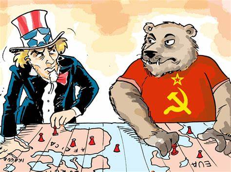
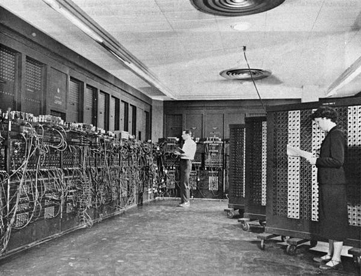

A partir de 1945, após a segunda guerra mundial, uma nova realidadetomava forma no cenário internacional. Estados Unidos da América (EUA) e União das Repúblicas Socialistas Soviéticas (URSS), as principais potências emergentes do conflito, iriam iniciar uma longa disputa pela hegemonia global, denominada Guerra Fria, disputa essa que ocupou a agenda mundial pelos quase 45 anos seguintes.
Então nessa apresentação vamos apresentar alguns pontos relevantes da época retrada no trabalho, como invenções criadas nesse período, a corrida espacial, beneffícios e malefícios que a informática desenvolvida na Guerra Fria trouxe para o mundo contemporâneo e um tópico extra que seria o de criptografia.
